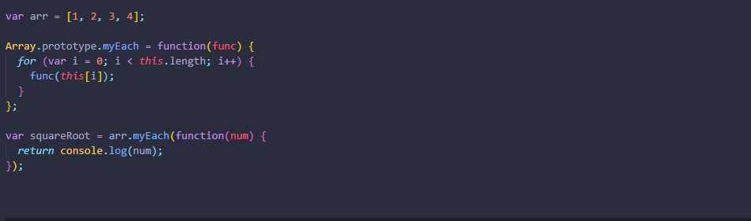
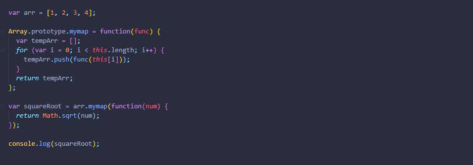
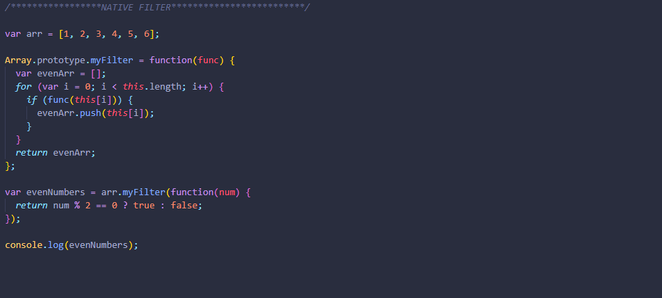
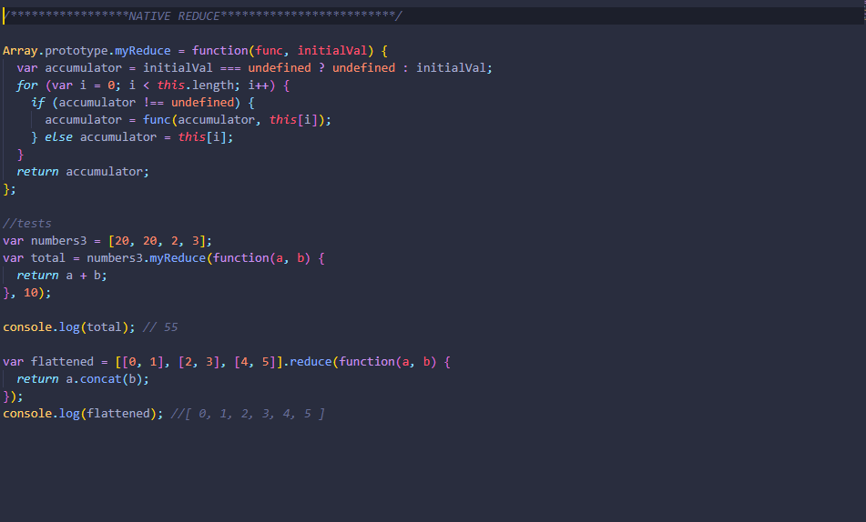
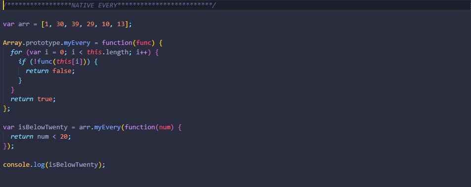
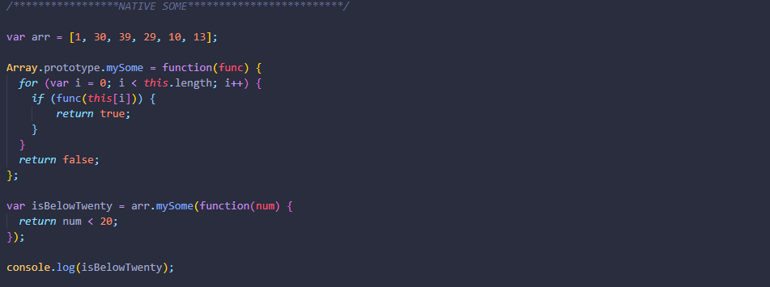

The forEach() method executes a provided function once for each array element. Here’s the native implementation of forEach() method that helps to print each element of an array.
The map() method is used to apply a function on every element in an array. A new array is then returned. Here’s the native implementation of map() method that helps to calculate the square root of each element of an array.
The filter() method returns a new array created from all elements that pass a certain test preformed on an original array. Here’s the native implementation of filter() method that helps to filter the even number of an array.
The reduce() method is used to apply a function to each element in the array to reduce the array to a single value. Here’s the native implementation of reduce() method that helps to calculate the sum of all element of an array.
The every() method tests whether all elements in the array pass the test implemented by the provided function. Here’s the native implementation of every() method that's check every element of an array less than 20.
The some() method tests whether at least one element in the array passes the test implemented by the provided function. Here’s the native implementation of some() method that's check at least one element of an array less than 20.
Click on the link below to get all the implemented code.